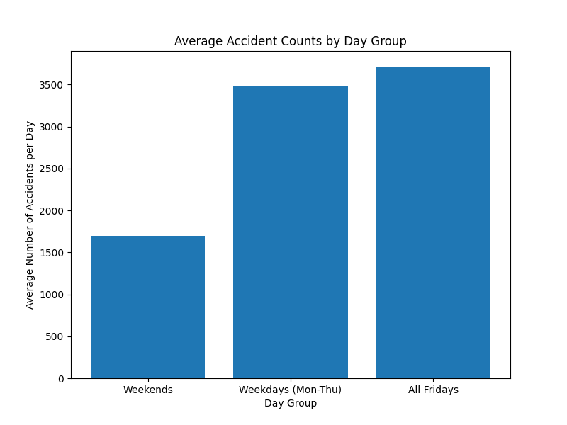
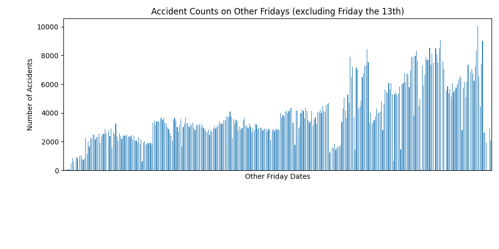

Friday the 13th and Car Accidents - Project Details
Is Friday the 13th truly the unluckiest day of the year? To investigate this claim, I analyzed a large publicly available accident dataset containing millions of entries. Due to the dataset's size, I leveraged the Pandas library in Python to efficiently process and extract insights. Using various Python libraries, I aggregated the data by day of the week and created a subset specifically for Fridays that fell on the 13th of the month.
My initial analysis focused on the overall distribution of accidents throughout the week. As expected, weekdays exhibited higher accident frequencies compared to weekends. Interestingly, Friday emerged as the day with the highest accident rate among weekdays. A plausible explanation for this elevated frequency is the confluence of weekday commuter traffic and the onset of weekend travel, potentially resulting in increased road congestion.
A comparison of average accident rates between all Fridays and Fridays the 13th revealed a further increase on the latter. Despite Friday already exhibiting the highest average accident count, Fridays the 13th experienced an even greater number. While I don't subscribe to superstition, these preliminary findings suggest a possible correlation, albeit with only minor visual evidence from the plotted data.
However, several alternative explanations warrant consideration. The limited number of Fridays the 13th within the dataset makes the average accident rate for this subset more susceptible to the influence of outliers. Future analysis could explore the correlation between accidents and natural disasters (e.g., hurricanes, blizzards) to determine if any such events coincide with Fridays the 13th. Furthermore, validating these findings with an independent accident dataset would provide additional support. While the current dataset is extensive, the possibility of random variation cannot be entirely discounted. Finally, a thorough review of the data collection methodology is recommended to ensure data quality and validity.
Visualizations

We can see in the above histogram that there is a large spread in the data. We have a day with almost 8,500 accidents and on the other extreme, a day near 0 accidents. The data set did say there will be some missing values due to down time for the instruments, so if we exclude that minimum of 0 under the assumption that it could be due to down time, we instead use the new minimum of about 2,500, and this still gives us a variation of around 6,000 accidents. Many factors could account for the large amount of variation in this data, but what will be important is comparing the highs, lows, and averages for this group versus the other groups we have visualized down below.
The above barplot shows grouped averages for weekend days, week days (less Friday), and Friday by itself. There is a significant difference between the Friday group or modified 'weekdays' group when compared to the 'weekends' group, but we do not see more than a minor difference between Fridays and the other weekdays, but Friday overall is the highest accident group. My suspicion is work traffic from the Monday to Friday workers contributes to a large number of accidents, and this claim is made from my knowledge of rush hour traffic during the work week. Weekends have less regular traffic since people tend to do more vacations, shopping trips, and other things instead, also based on my own experiences with traffic. I suspect Friday has elevated traffic accidents versus other weekdays, though only slightly elevated, but due to Friday being a combination of a weekday (with work traffic) and a weekend (with some extra travel due to the explanation of weekend traffic).
The above plot shows all Fridays in chronological order, but excludes all Fridays that are Friday the 13th. We can see peaks where there are several days of elevated traffic accidents, and there are any number of possible explanations for those peaks, possibly seasonal traffic or weather-related. The peaks I described seem to be around the 2,000 mark, 4,000 mark, 6,000 mark, and 8,000 mark. We have values that approach 0, and max values that are near 10,000 (though this high seems to be an isolated incident). In this regard, the distribution of Friday the 13th accidents very closely resembles the other Fridays plot above, but the Friday the 13th plot lacks days below 2,500 accidents, causing it to have a skewed average higher than the other Fridays.